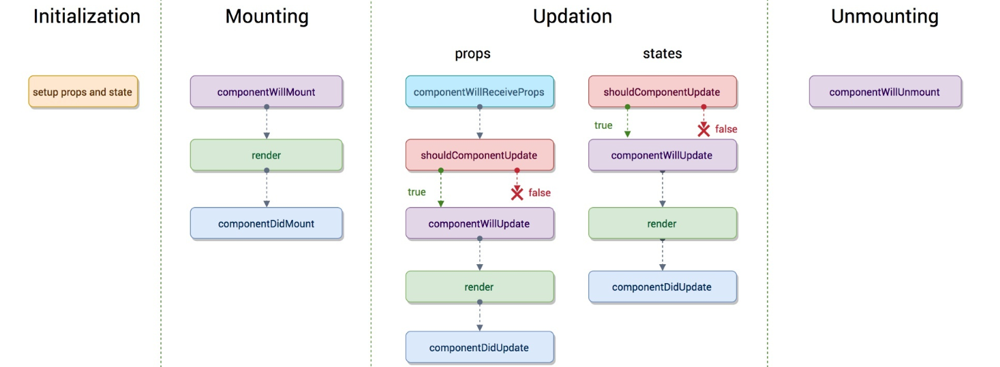

react-summary
react
npm run eject 可以看到项目配置文件（但是会打散项目，是不可逆的操作）
1.react简介
1-1.react简介
react开源网址：https://github.com/facebook/react
react英文官网：https://reactjs.org/
react中文官网：https://react.docschina.org/
react其他非官方文档：http://caibaojian.com/react/
1-2.知识点梳理
HTML5 参考手册：https://techbrood.com/tagsref
CSS3 参考手册：https://techbrood.com/cssref
JS 参考手册：https://techbrood.com/jsref
ES5/ES6 参考手册：http://es6.ruanyifeng.com/ or http://caibaojian.com/es6/
NodeJS 参考手册：http://nodejs.cn/api/ or http://www.php.cn/course/70.html
2.React环境配置与调试技巧
2.1使用NPM配置React开发环境
2.1.1npm项目初始化
npm init
2.1.2项目依赖包安装
文档：https://facebook.github.io/react/docs/package-management.html
1 | npm install --save react react-dom babelify babel-preset-reac |
1 | npm install --save babel-preset-es2015 |
2.2webpack热加载配置
2.2.1官网
2.2.2配置文件文档
http://webpack.github.io/docs/configuration.html
2.2.3全局安装
1 | npm install -g webpack |
2.2.4当前项目安装
1 | npm install webpack --save |
2.2.5初始化配置
1 | var webpack = require('webpack'); |
2.2.6打包
1 | webpack |
2.2.7运行webpack-dev-server
1 | webpack-dev-server --contentbase src |
2.2.8项目热加载
方法一：
http://localhost:8080/webpack-dev-server/index.html
方法二：
webpack-dev-server –content-base ssrc –inline –hot
访问localhost:8080
2.3Chremo React插件的使用
插件名称： React Developer Tools
插件地址：进入Google应用商店下载
插件源码与介绍：https://github.com/facebook/react-devtools
插件名称： Redux DevTools
插件地址：进入Google应用商店下载
插件源码与介绍：https://github.com/reduxjs/redux-devtools
3.开发工具与必要组件
我个人比较推荐微软推出的 vs code 编辑器
官网地址：https://code.visualstudio.com/
vs code 插件及配置：https://www.cnblogs.com/screen/p/9000861.html
3.1开发工具Atom
开源地址：https://github.com/atom/atom
3.2React开发相关Atom插件配置
JS支持atom-ternjs
格式化atom-beautify
直接打开浏览器open-in-browser
快速HTML代码emmet
文件图标file-icons
高亮当前行highlight-line
高亮所有选择highilght-selected
4.React组件基础
4.1React虚拟DOM概念
开源算法：https://github.com/Matt-Esch/virtual-dom
简单示例：http://requirebin.com/?gist=5492847b9a9025e64bab
官方解释：https://facebook.github.io/react/docs/glossary.html
4.2React组件
组件是react的一个主要特性
组件对于模块化开发的重要性
组件的return函数里返回 的HTML节点必须是一个
可以给外部使用的组件定义：
1 | export default class ComponentHeader extends React.Component{} |
入口的定义：
1 | ReactDOM.render(,document.getElementById('root')); |
4.3React多组件嵌套
组件也可以通过参数的形式传递
组件的return函数里返回的HTML节点必须是一个
注意项目命名的规范与文件的结构化
4.4JSX内置表达式
1 | {window.userName == '' ? '默认用户名' : '用户名' + userName} |
1 | {/注释/} |
HTML要显示可以进行Unicode转码
4.5生命周期
官方文档：https://react.docschina.org/docs/state-and-lifecycle.html


5.React属性与事件
5.1State属性
state对于模块属于自身属性
state的作用域只属于当前的类，不污染 其他模块
state初始化：
1 | constructor() { |
state 变量调用:
1 | <p>{this.state.username} {this.state.age}</p> |
state 变量更改:
1 | this.setState({username: "IMOOC"}); |
5.2Props属性
props对于模块属于外来属性
props 传递:
1 | // Parent.js |
props 接收:
1 | // Child.js |
5.3事件与数据的双向绑定
1、事件的绑定
注意ES6的语法
可以在构造函数里绑定this：this.handleClick = this.handleClick.bind(this);
或者在调用时绑定：onClick={ this.handleClick.bind(this, 50)};
再或者使用箭头函数：handleClick = () => {console.log(‘click’)};
2、子页面向父页面传递参数的方法
在子页面中通过调用父页面传递过来的事件props进行组件间的参数传递
5.4可复用组件
1、props验证
https://facebook.github.io/react/docs/reusable-components.html
示例：（通过PropTypes设置校验props，后面紧跟类型，isRequired为必填）
1 | const propsTypes = { |
使用方法：
1 | BodyIndex.propTypes = { |
2、设置默认props的值
1 | cosnt defaultProps = { |
使用方法：
1 | BodyIndex.defaultProps = defaultProps; |
3、传递所有参数的快捷方式
1 | <Copmonent {...this.props} more="values" /> |
5.5组件的refs
原始获取方法：
1 | var myDiv = document.getElementById("myDiv"); |
方法二的获取：
1 | this.refs.myInput |
注意：
refs是访问到组件内部DOM节点唯一可靠的方法
refs会自动销毁对子组件的引用
不要在render或render之前对refs进行调用
不要滥用refs
5.6独立组件间共享Mixins
1、不同的组件之间共用功能，共享代码
2、官方文档：https://facebook.github.io/react/docs/reusable-components.html#mixins
3、和页面具有类似的生命周期
4、ES6下的使用需要安装插件：https://github.com/brigand/react-mixin
5、关于Mixins的讨论文章：https://facebook.github.io/react/blog/2016/07/13/mixins-considered-harmful.html
6.React样式
6.1内联样式
CSS命名规范：dialog__config-button–highlight
1 | const styleComponentHeader = { |
注意样式的驼峰写法
1 | style = { |
文件中引用CSS的形式
注意class需要更改成className（class是关键字）
缺点是动画、伪类（hover）等不能使用
6.2内联样式中的表达式
paddingBottom: (this.state.miniHeader) ? “5px” : “10px”
注意这里的即时变化
6.3CSS模块化
1、css模块化
全局污染
命名混乱
依赖管理不彻底
无法共享变量
代码压缩不彻底
2、css modules模块化
3、babel-plugin-react-html-attrs
https://github.com/insin/babel-plugin-react-html-attrs
4、style-loader
https://github.com/webpack/style-loader
5、css-loader
https://github.com/webpack/css-loader
6、导入： var footerCss = require(“../../css/footer.css”)
7、使用
:local(.normal){color: red}
:global(.btn){color: blue}
8、css模块化的优点
所有样式都是local的，解决了 命名冲突 和全局污染问题
class名生成规则配置灵活， 可以以此来压缩class名
只需引用组件的JS就能搞定组件所有的JS和CSS
依然是css，学习成本低
6.4JSX样式与CSS的互转
在线转换工具：
http://staxmanade.com/CssToReact/
6.5 Ant Design样式框架介绍
7.React Router
7.1Router的概念
demo代码的逻辑结构：
首页
详情页面，主体部分共享与首页
列表页
其他平级页面
控制页面的层级关系
单页面构建Router控制
github地址： https://github.com/ReactTraining/react-router
底层机制：
React: state/props —-> Components —-> UI
Router: location —-> Router —-> UI
7.2Router基本用法
1、安装命令：
1 | npm install -S react-router or yarn add react-router |
2、使用
1 | import { Router, Route, hashHistory } from 'react-router'; |
7.3Router基本参数
路由取值：
?a=123 ：这种需要从 this.props.location.query 里取值；
/a/123 ：这种需要从 this.props.match.params里取值；
获取路由 this.props.location.pathname
路由传参 this.props.history.push({pathname :”/device/list”,query:{data:item})
进行路由跳转 this.props.history.push({pathname :”/meet”})
7.3.1 path
Route组件的path属性指定路由的匹配规则。这个属性是可以省略的。
定义的方法：
1 | <Route path="inbox" component={Inbox}> |
path属性可以使用通配符。
1 | (1) :paramName |
path属性也可以使用相对路径（不以/开头），匹配时就会相对于父组件的路径。嵌套路由如果想摆脱这个规则，可以使用绝对路由。
路由匹配规则是从上到下执行，一旦发现匹配，就不再其余的规则了。
带参数的路径一般要写在路由规则的底部。
7.3.2 IndexRoute
IndexRoute 就是解决这个问题，显式指定Home是根路由的子组件，即指定默认情况下加载的子组件。你可以把IndexRoute想象成某个路径的index.html。
1 | <Router> |
7.3.3 redirect组件
<Redirect>组件用于路由的跳转，即用户访问一个路由，会自动跳转到另一个路由。
1 | <Route path="inbox" component={Inbox}> |
7.3.4 indexRedirect组件
IndexRedirect组件用于访问根路由的时候，将用户重定向到某个子组件。
1 | <Route path="/" component={App}> |
7.3.5 Link
Link组件用于取代<a>元素，生成一个链接，允许用户点击后跳转到另一个路由。它基本上就是<a>元素的React 版本，可以接收Router的状态。
1 | render() { |
在Router组件之外，导航到路由页面，可以使用浏览器的History API，像下面这样写。
1 | import { browserHistory } from 'react-router'; |
7.3.6 indexLink
如果链接到根路由/，不要使用Link组件，而要使用IndexLink组件。
这是因为对于根路由来说，activeStyle和activeClassName会失效，或者说总是生效，因为/会匹配任何子路由。而IndexLink组件会使用路径的精确匹配。
1 | //根路由只会在精确匹配时，才具有activeClassName。 |
7.3.7 history属性
Router组件的history属性，用来监听浏览器地址栏的变化，并将URL解析成一个地址对象，供 React Router 匹配。
history属性，一共可以设置三种值。
1 | //1、browserHistory : 浏览器的路由就不再通过Hash完成了，而显示正常的路径example.com/some/path，背后调用的是浏览器的History API。 |
7.3.8表单处理(表单跳转、点击按钮跳转等操作)
1、browserHistory.push
2
3
4
5
6
7
8
9
10
// ...
handleSubmit(event) {
event.preventDefault()
const userName = event.target.elements[0].value
const repo = event.target.elements[1].value
const path = `/repos/${userName}/${repo}`
browserHistory.push(path)
},
2、使用context对象。
2
3
4
5
6
7
8
9
10
11
12
// ask for `router` from context
contextTypes: {
router: React.PropTypes.object
},
handleSubmit(event) {
// ...
this.context.router.push(path)
},
})
7.3.9 路由的钩子
每个路由都有Enter和Leave钩子，用户进入或离开该路由时触发。
2
3
4
＜Route path="inbox" component={Inbox}>
＜Redirect from="messages/:id" to="/messages/:id" />
</Route>
上面的代码中，如果用户离开/messages/:id，进入/about时，会依次触发以下的钩子。
/messages/:id的onLeave/inbox的onLeave/about的onEnter
下面是一个例子，使用onEnter钩子替代<Redirect>组件。
2
3
4
5
6
7
8
9
<Route
path="messages/:id"
onEnter={
({params}, replace) => replace(`/messages/${params.id}`)
}
/>
</Route>
onEnter钩子还可以用来做认证。
2
3
4
5
6
7
8
9
10
11
12
if (!auth.isAdmin()) {
// Redirect to Home page if not an Admin
replace({ pathname: '/' })
}
}
export const AdminRoutes = () => {
return (
<Route path="/admin" component={Admin} onEnter={requireAuth} />
)
}
下面是一个高级应用，当用户离开一个路径的时候，跳出一个提示框，要求用户确认是否离开。
2
3
4
5
6
7
8
9
10
11
12
13
14
15
16
17
18
React.createClass({
componentDidMount() {
this.props.router.setRouteLeaveHook(
this.props.route,
this.routerWillLeave
)
},
routerWillLeave(nextLocation) {
// 返回 false 会继续停留当前页面，
// 否则，返回一个字符串，会显示给用户，让其自己决定
if (!this.state.isSaved)
return '确认要离开？';
},
})
)
上面代码中，setRouteLeaveHook方法为Leave钩子指定routerWillLeave函数。该方法如果返回false，将阻止路由的切换，否则就返回一个字符串，提示用户决定是否要切换。
8.NodeJs简介与安装
8.1NodeJS简介
8.2NodeJS安装
检查安装成功的命令： node -v && npm -v
注意：注意版本之间的区别差异，通常推荐安装最新版本即可（具体情况具体分析）
8.3NodeJS配置国内源
全局设置，在npmrc文件中添加：
1 | registry = https://registry.npm.taobao.org |
全局设置默认路径：
1 | Windows： NodeJS安装目录下node_modules\npm.npmrc |
CNPM原理：
http://blog.parryqiu.com/2016/08/18/ionic_installation/
8.4 yarn的安装和使用
中文官网：https://yarn.bootcss.com/
常用命令：
yarn add：添加要在当前包中使用的包。yarn init：初始化包的开发。yarn install：安装package.json文件中定义的所有依赖项。yarn publish：将包发布到包管理器。yarn remove：从当前包中删除未使用的包。
9. Redux
官方文档：https://www.redux.org.cn/
Redux 是 JavaScript 状态容器，提供可预测化的状态管理。类似于vue中的vuex。
这里有一篇较好的博客示例讲解：https://github.com/brickspert/blog/issues/22
action就是动作，也就是通过动作来修改state的值。也是修改store的唯一途径。
Store表示的是整个的数据存储中心，集中大部分页面需要的状态以及数据；
ActionCreators表示的是view 视图层与data数据层的介质；
Reduce的作用是接收action并更新Store中对应的数据；
总结（个人理解）：
1、用户在UI组件中触发了相应的action，这就到了ActionCreator；
2、而后通过dispatch方法，触发action到store，store将action给了reducers；
3、reducers监听到action，根据条件返回更新之后的state给store，更新了store中的数据；
4、store中的数据更新后，UI页面随之同步更新
9.1基本简介
三大原则
1、单一数据源
使用redux的程序，所有的state都存储在一个单一的数据源store内部，类似一个巨大的对象树。
2、state是只读的
state是只读的，能改变state的唯一方式是通过触发action来修改
3、使用纯函数执行修改
为了描述 action 如何改变 state tree ， 你需要编写 reducers。
reducers是一些纯函数，接口当前state和action。只需要根据action，返回对应的state。而且必须要有返回。
纯函数概念：
一个函数的返回结果只依赖于它的参数，并且在执行过程里面没有副作用，我们就把这个函数叫做纯函数
基本概念及介绍
1、action
顾名思义，action就是动作，也就是通过动作来修改state的值。也是修改store的唯一途径。
action本质上就是一个普通js对象，我们约定这个对象必须有一个字段type，来表示我们的动作名称。一般我们会使用一个常量来表示type对应的值。
此外，我们还会把希望state变成什么样子的对应的值通过action传进来，那么这里action可能会类似这样子的
1 | import * as constants from './constants' //导入存放自定义的常量，以避免不必要的错误发生 |
2、Reducer
Action 只是描述了有事情发生了这件事实，但并没有说明要做哪些改变，这正是reducer需要做的事情。
Reducer作为纯函数，内部不建议使用任何有副作用的操作，比如操作外部的变量，任何导致相同输入但输出却不一致的操作。
如果我们的reducer比较多，比较复杂，我们不能把所有的逻辑都放到一个reducer里面去处理，这个时候我们就需要拆分reducer。
幸好，redux提供了一个api就是combineReducers Api。
1 | 抽离的组件中的reducer.js文件 |
3、store
store是redux应用的唯一数据源，我们调用createStore Api创建store。
9.2基本安装以及使用示例
1、安装依赖
1 | npm install redux --save |
2、创建store（index.js文件）
1 | import { createStore, compose, applyMiddleware } from 'redux'; //导入redux |
3、创建reducer（reducer.js文件）
1 | import * as constants from './constants' |
4、创建action（actionCreators.js文件）
1 | import * as constants from './constants' |
5、抽离常量，创建action-type（这里定义的当然是自定义的，看你自己怎么写）
1 | export const SEARCH_FOCUS = 'header/SEARCH_FOCUS'; |
9.3redux中间件
1、redux的中间件是什么
redux中间件的中间指的是action和store之间

2、redux的中间件有什么用
redux的中间件就是一个对dispatch方法的升级（封装），以前的dispatch只能接收一个对象，升级（封装）之后可以传递对象和函数
3、redux-saga中间件的使用
创建store的时候根据redux-sagas官方文档的配置把redux-sagas的配置好
引入createSagaMiddleware然后去创建一个sagaMiddleware
然后通过applyMiddleware去使用这个中间件
接着创建一个saga.js文件，然后在store的index文件里引入这个文件
再通过sagaMiddleware去运行引入的这个文件
书写saga.js文件，saga.js文件中一定要导出generator函数。
注意：在generator函数（ES6新增）里面做异步请求的时候就不要再使用promise的形式了。用yield来做。
简单示例：
1 | //代码步骤 |
1 | //示例index.js |
4、redux-thunk和redux-saga的区别
相同点：
都是可以处理异步操作和协调复杂的dispatch。
不同点：
1、redux-saga 是通过 Generator 函数来创建的，即用同步的方式写异步的代码
2、redux-thunk 是在 action 被创建时才调用；redux-saga 在应用启动时就开始调用，监听action 并做相应处理； （通过创建 saga.js文件将所有的异步操作逻辑收集在一个地方集中处理）
3、启动的任务可以在任何时候通过手动取消，也可以把任务和其他的 Effects 放到 race 方法里可以自动取消
redux-saga提供了很多API，更方便适合处理大型项目；redux-thunk中API则很少，一般适合用于中小型项目
文档链接：
https://redux-saga-in-chinese.js.org/docs/advanced/NonBlockingCalls.html
10. 其他补充
容器组件和UI组件：
UI 组件
UI组件有以下几个特征。
- 只负责 UI 的呈现，不带有任何业务逻辑
- 没有状态（即不使用this.state这个变量）
- 所有数据都由参数（this.props）提供
- 不使用任何 Redux 的 API
下面就是一个 UI 组件的例子。
1 | const Title = |
容器组件
容器组件的特征恰恰相反。
- 负责管理数据和业务逻辑，不负责 UI 的呈现
- 带有内部状态
- 使用 Redux 的 API
总之，只要记住一句话就可以了：UI 组件负责 UI 的呈现，容器组件负责管理数据和逻辑。
你可能会问，如果一个组件既有 UI 又有业务逻辑，那怎么办？回答是，将它拆分成下面的结构：外面是一个容器组件，里面包了一个UI 组件。前者负责与外部的通信，将数据传给后者，由后者渲染出视图。
React-Redux 规定，所有的 UI 组件都由用户提供，容器组件则是由 React-Redux 自动生成。也就是说，用户负责视觉层，状态管理则是全部交给它。
icon图标网站：
SVG参考手册：<https://techbrood.com/svgref
Three.js 是一款开源的主流3D绘图JS引擎（名字Three就是3D的含义），原作者为Mr.Doob
项目地址为：https://github.com/mrdoob/three.js/。
ThreeJS参考手册：https://techbrood.com/threejs/docs/
基本技术栈：HTML+CSS+JavaScript +React+Ant Design+ +NodeJS+webpack
技术语言 框架 环境配置
使用命令安装软件的工具：
Mac：https://brew.sh/
Windows：https://chocolatey.org/install
资源推荐：
全球视野的H5、WebGL和WebVR作品分享平台：https://techbrood.com/>
react全局初始化样式：https://meyerweb.com/eric/tools/css/reset/
强大易用的原型设计工具： https://modao.cc/features
moment：javascript 解析，验证，操作，和展示日期：https://momentjs.com/
Font-Awesome：图标字体和 CSS 套件：https://fontawesome.com/?from=io
material-design-icons：Google 开发的 Material Design 风格的图标：http://google.github.io/material-design-icons/
json-server：30秒内零编程实现一个 REST API 接口：https://github.com/typicode/json-server
30-seconds-of-code：一个有用的 JavaScript 片段集合，让你可以在 30秒或更少的时间内理解：https://github.com/30-seconds/30-seconds-of-code
react相关